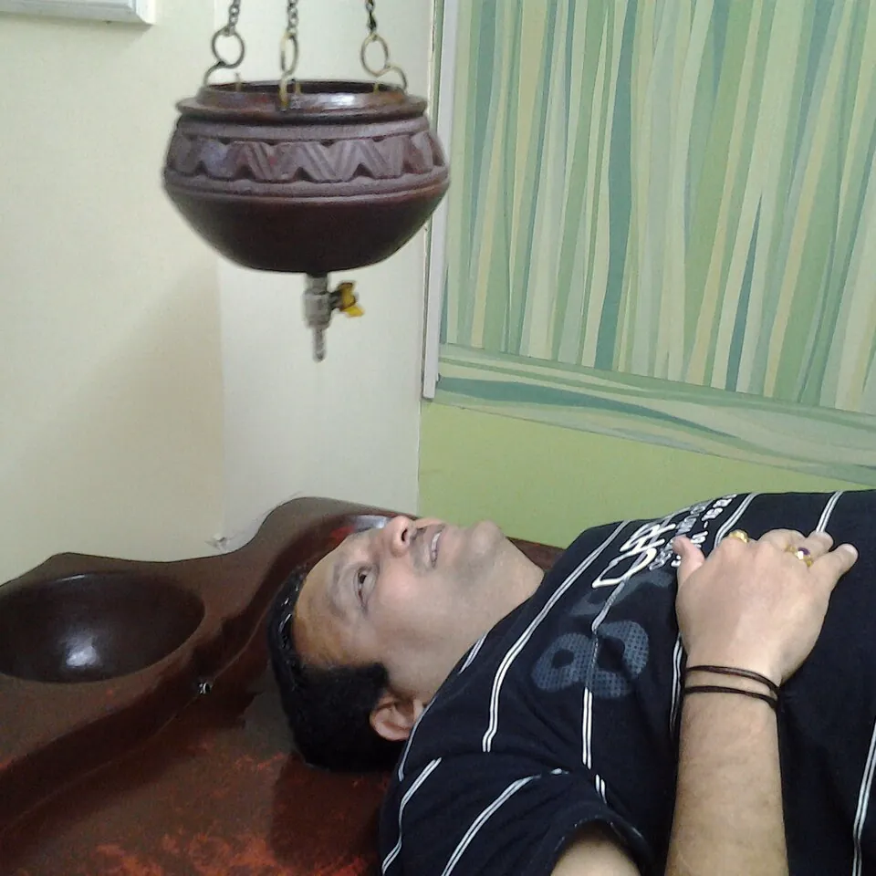

ಎಲ್ಲ ಚಿಕಿತ್ಸೆಗಳುಆಹಾರ ಮತ್ತು ಪ್ರಕೃತಿ
ಪಂಚಕರ್ಮ
ಆಳವಾದ ಶುದ್ಧೀಕರಣ ಮತ್ತು ನವಚೈತನ್ಯಕ್ಕೆ ಆಯುರ್ವೇದದ ಐದು ಕರ್ಮಗಳು. ಸಿದ್ಧತೆ, ಶುದ್ಧೀಕರಣ, ಚೇತರಿಕೆ ಎಂಬ ಮಾರ್ಗದರ್ಶಿತ ಕ್ರಮ.

ಹೇಗೆ ಸಹಾಯ ಮಾಡುತ್ತದೆ
- ಸಹಜ ಶುದ್ಧೀಕರಣಕ್ಕೆ ಪೂರಕ
- ಜೀರ್ಣಕ್ರಿಯೆಗೆ ಪೂರಕ
- ಶಕ್ತಿಯನ್ನು ಹೆಚ್ಚಿಸುತ್ತದೆ
- ಚರ್ಮದ ಆರೈಕೆ
- ಉತ್ತಮ ನಿದ್ರೆಗೆ ಸಹಾಯಕ
- ಮನಶ್ಶಾಂತಿ ನೀಡುತ್ತದೆ
- ಆರೋಗ್ಯಕರ ತೂಕಕ್ಕೆ ಪೂರಕ
ನಾವು ನೀಡುವುದು
- ಅಭ್ಯಂಗ (ಎಣ್ಣೆ ಮಸಾಜ್)
- ಶಿರೋಧಾರಾ (ಹಣೆಯ ಮೇಲೆ ಎಣ್ಣೆ)
- ಪಿಳಿಚ್ಚಿಲ್ (ಎಣ್ಣೆ ಸ್ನಾನ)
- ಉದ್ವರ್ತನ (ಪುಡಿ ಮಸಾಜ್)
- ಕಿಳಿ (ಗಿಡಮೂಲಿಕೆ ಗಂಟು)
ನಿಮಗೆ ಯಾವುದು ಸೂಕ್ತ ಎಂದು ನಮ್ಮ ವೈದ್ಯರನ್ನು ಕೇಳಿ.
ಐದು ಮುಖ್ಯ ಕರ್ಮಗಳು
- ವಮನಚಿಕಿತ್ಸಕ ವಾಂತಿ
- ವಿರೇಚನಗಿಡಮೂಲಿಕೆ ವಿರೇಚನ
- ಬಸ್ತಿಔಷಧೀಯ ಎನಿಮಾ
- ನಸ್ಯಮೂಗಿನ ಮೂಲಕ ಚಿಕಿತ್ಸೆ
- ರಕ್ತಮೋಕ್ಷಣರಕ್ತ ಶುದ್ಧಿ
ಮೂರು ಹಂತಗಳು
- ಪೂರ್ವ ಕರ್ಮಸಿದ್ಧತೆ, 3 ರಿಂದ 7 ದಿನ
- ಪ್ರಧಾನ ಕರ್ಮಮುಖ್ಯ ಶುದ್ಧೀಕರಣ, 3 ರಿಂದ 7 ದಿನ
- ಪಶ್ಚಾತ್ ಕರ್ಮಚೇತರಿಕೆ, 7 ರಿಂದ 14 ದಿನ
ಈ ತಾಣದ ಮಾಹಿತಿ ಸಾಮಾನ್ಯ ಸ್ವಾಸ್ಥ್ಯ ಅರಿವಿಗಾಗಿ ಮಾತ್ರ. ಇದು ರೋಗನಿರ್ಣಯ ಅಥವಾ ಗುಣಪಡಿಸುವ ಭರವಸೆ ಅಲ್ಲ; ವೈದ್ಯಕೀಯ ಸಲಹೆಗೆ ಪರ್ಯಾಯವೂ ಅಲ್ಲ. ನಿಮಗೆ ಸೂಚಿಸಿದ ಚಿಕಿತ್ಸೆಯನ್ನು ಮುಂದುವರಿಸಿ ಮತ್ತು ಅರ್ಹ ವೈದ್ಯರನ್ನು ಸಂಪರ್ಕಿಸಿ. ನಮ್ಮ ಸೇವೆಗಳನ್ನು ಅರ್ಹತೆ ಮತ್ತು ಕಾನೂನು ವ್ಯಾಪ್ತಿಯೊಳಗೆ ನೀಡಲಾಗುತ್ತದೆ. ಸಾಂದರ್ಭಿಕ ಚಿತ್ರ.